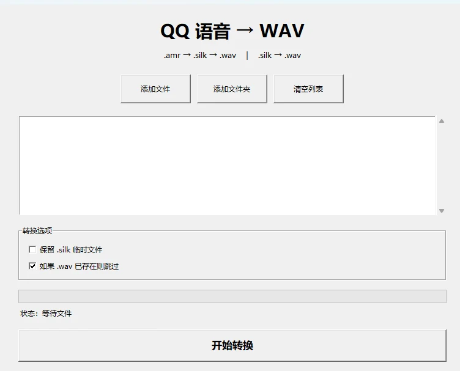

PROJECT 05 — AUDIO CONVERTER
语音转换器 SILK2WAV
把 QQ 的 .silk 语音拖进来，批量转成能播的 WAV，原文件不动。

它做什么
选文件或直接拖放，支持批量。输出是 24kHz、单声道、16bit 的 WAV，和原语音放在同一个目录；已经转过的默认跳过，原来的 .silk 保留不删。
转换前先认文件头，不是 SILK 的会单独列出来，不会混在一起假装成功。
怎么做的
用 pysilk 解码，wave 模块写文件。文件名会清掉 Windows 不接受的字符，重名时自动加序号。整个过程在本地，不上传。
界面是 Tkinter，一个列表加两个按钮，尽量少让人做选择。
有些声音只存在聊天记录里，值得捞出来。
踩过的坑
- 有的文件带
#!SILK_V3头，有的没有，得先探测再解码。 - 超长语音一次性读进内存会顶不住，要按块写。
- 中文路径和空格路径都要试一遍，不能只在本机看着正常就算完。
转换失败的文件会留在列表里并标红，原因写清楚，方便单独重试。